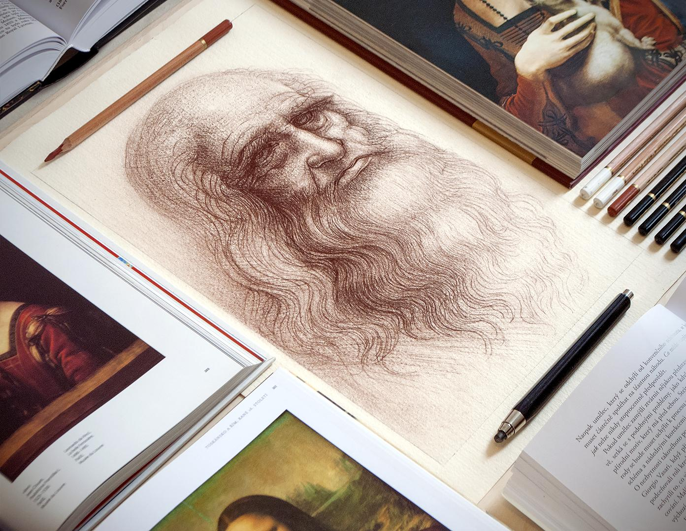

A Engenharia Reversa da Arte
Como Pensa um Artista Autodidata: A Arte de Aprender Sozinho
"Não há mapa, apenas a bússola da curiosidade."
Para o artista autodidata, a criação não começa com uma ementa escolar ou um professor apontando o caminho. Começa com uma inquietação interna. Enquanto a academia oferece um roteiro seguro, o autodidata abraça a selva do desconhecido.
A mente de quem aprende sozinho não opera em linhas retas, mas em espirais de descoberta. Para eles, a arte não é apenas algo que se faz, é um quebra-cabeça que se resolve dia após dia.
A Curiosidade como Currículo
O autodidata não espera permissão para aprender. O que liga esse artista ao seu ofício é a paixão obsessiva. Sem a estrutura formal de prazos e notas, o combustível que mantém a máquina funcionando é o puro desejo de ver uma ideia materializada.
Se fossem esperar pelas condições ideais ou pelo "curso perfeito", jamais começariam. Portanto, o autodidata transforma o mundo em sua sala de aula. Eles observam a luz batendo em uma janela, a textura de uma parede velha ou a anatomia de um rosto no metrô com um olhar analítico.
- O livro é o mentor;
- A prática é a prova;
- O erro é a lição.
Desejam dominar a técnica não para ganhar um certificado, mas para libertar a visão que carregam dentro de si.
"A técnica a gente aprende com a repetição; a visão a gente refina com a alma. O diploma na parede não pinta o quadro."
O Erro como Professor Silencioso
Muitos há que desistem diante da primeira falha, buscando a validação imediata de um mestre. O autodidata, porém, desenvolve uma relação íntima com o fracasso. Eles tropeçam, mancham a tela, desafinam a nota e escrevem torto.
Mas, ao contrário do estudante que teme a nota vermelha, o autodidata vê no erro uma pista. Cada falha revela o que não funciona, aproximando-o da verdade de sua expressão.
Essa "engenharia reversa" da arte cria um estilo único. Sem ninguém para dizer "não misture isso com aquilo", o autodidata frequentemente quebra regras que nem sabia que existiam, criando algo fresco e inovador.
A Disciplina da Liberdade
A liberdade total pode ser um peso assustador. Sem ninguém para cobrar horários, o artista precisa forjar uma disciplina de ferro.
O Senhor da sua própria arte convida-o a criar sua própria rotina. O jugo aqui é a responsabilidade pessoal. O artista diz para si mesmo:
"Se eu não fizer, ninguém fará por mim. O talento é apenas o ponto de partida; a constância é o veículo."
A ansiedade de "não ser bom o suficiente" ou a famosa síndrome do impostor frequentemente batem à porta. Mas a resposta do autodidata está no trabalho contínuo. Enquanto a dúvida paralisa, a ação cura.
Aqueles que aceitam o princípio de que o aprendizado é eterno — e que nunca estarão "prontos", mas sempre "em preparação" — encontram paz no processo. Eles entendem que ser autodidata não é caminhar sozinho, mas caminhar de mãos dadas com a própria curiosidade, vendo em cada dificuldade uma oportunidade de inventar uma nova solução.
Reflexão sobre Criatividade e Aprendizado Contínuo.